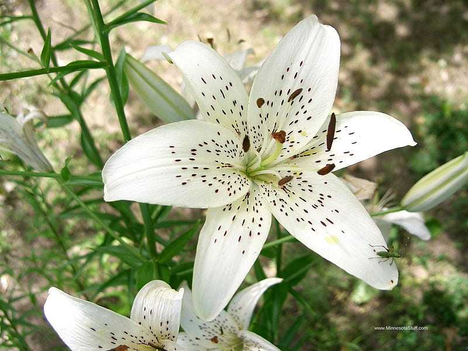
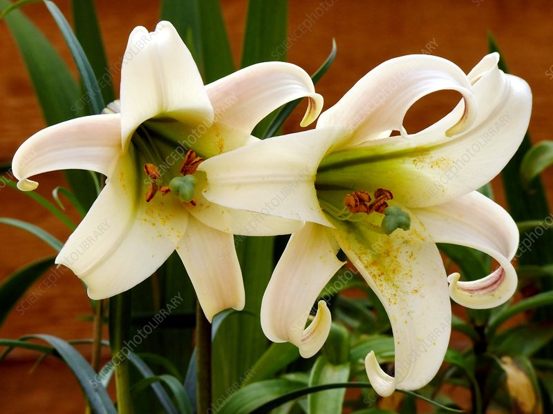

Meaning: Purity
Origin
In the Middle Ages, the lily became associated with the Virgin Mary. Paintings of the Annunciation—the announcement by the archangel Gabriel to Mary that she would conceive and be the mother of Jesus— often depict Gabriel giving the Blessed Virgin a lily, in honor of her purity.
Gallery

